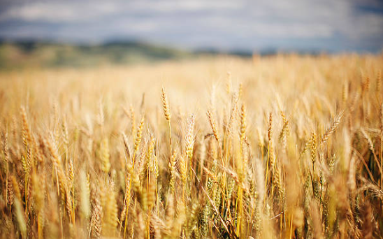
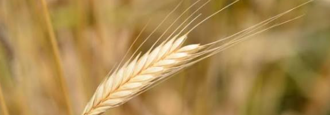

A naturally golden hue
Einkorn’s beautiful golden color comes in part from naturally occurring carotenoids such as lutein.
✳ A little grain with a long story
Meet one of the oldest cultivated wheats in the world—and discover what makes this golden grain so special.

A grain that takesAn ancient grain, indeed
Einkorn is one of the oldest forms of cultivated wheat in the world, with a history stretching back to the earliest farming communities. Its name comes from the German word meaning “one grain,” referring to the single kernel traditionally found in each section of the wheat head.
Unlike modern wheat, which has been repeatedly hybridized and selectively bred over generations, einkorn has remained remarkably close to its ancient form. It connects the flour in our kitchens today with some of the earliest wheat ever grown and harvested by people.
Why is it so special?
Einkorn is simple, flavorful, and wonderfully different from the flour many of us grew up using.
Einkorn’s beautiful golden color comes in part from naturally occurring carotenoids such as lutein.
When we mill whole einkorn berries, the bran, germ, and endosperm stay together in the flour.
Its rich, slightly nutty flavor and distinctive baking qualities make it a lovely ingredient to explore.

Whole-grain goodness
Einkorn contains protein, whole-grain fiber, naturally occurring antioxidants, and vitamins and minerals including iron, zinc, and magnesium. Like any whole grain, it’s at its best when enjoyed as part of a varied diet.
Important wheat note: Einkorn contains gluten. It is still wheat and is not safe for people with celiac disease or a wheat allergy. It is not a gluten-free food.
Curious to try it?
Our stand is open most Saturday mornings, 8 AM to noon. What’s available can change from week to week.
Come say hello